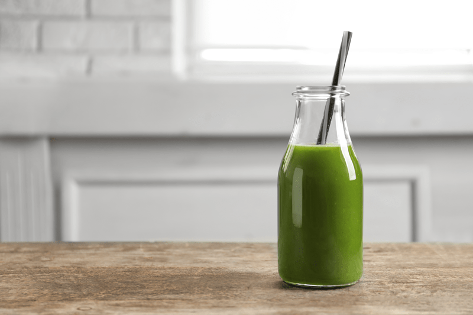
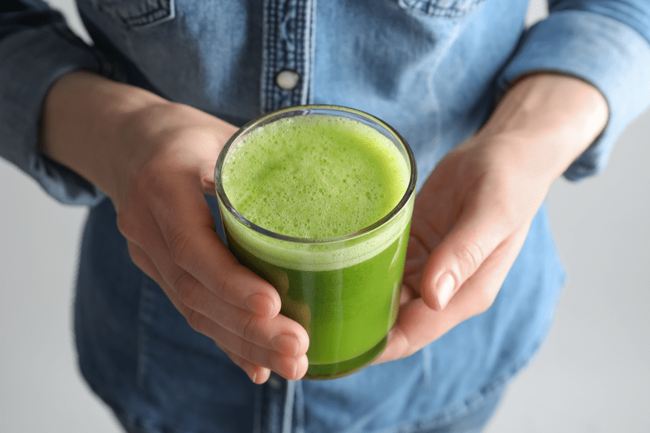

#4 – Things we do Wrong when Juicing
There are these glorious snippets in life when we feel highly motivated to improve our health. You may have found yourself saying, “Monday I am going to start exercising!” or “At the beginning of the new year I am going to eat more healthy!” or “I am going to do a juice cleanse starting this weekend!” We wake up on the appointed day with great excitement as we attempt to flip our world upside down with a whole new eating agenda.

For today’s post let’s say that we are going to start a juice cleanse. We are about to shock the living tarnation out of our digestive system. At first, we feel great and ready to conquer the world, but soon we find ourselves feeling nauseous, weak, tired, no stamina, and downright cranky. No one likes a cranky juicer, trust me. Been there, done that. So what gives?
Any time we want to make changes in our diet (including juicing) we need to do so with grace and ease. We need to not only give our digestion the time it needs to adjust to these power foods, but we also need to make sure that we are ready mentally and emotionally. If any of these are out of alignment, we are just setting ourselves up for disaster and disappointment. Below, I will be touching on a few top issues that derail our juicing efforts.
Starting Fast and Furious
Even though most people turn to juicing as a way to give their digestion a break, you need to be aware that certain fruits and veggies (dark leafy greens, wheatgrass, beets, etc.) are so powerful that you may experience some stomach distress if you drink too much of them. Drinking copious amounts of juice can rock your world (digestion) if you know what I mean. If you struggle with digestive issues, ease in slowly. Learn to listen to your body. It’s a pure form of self-love and care.

Using the Same Ingredients Every Day
A lot of people are guilty of this, myself included. Eating or drinking the same foods over and over seems easier, saves time, creates less stress about what to consume, and so on. I get it, I understand, I got the T-shirt and it’s too snug (haha). The same thing happens when juicing. Juicing can be a fantastic way to flood the body with nutrients; antioxidants, vitamins, and minerals. But if we aren’t careful, a good thing can quickly turn into a bad thing. It’s one thing to eat a clean diet; it’s another to eat a solid rotation of foods to ensure that we are eating a NUTRIENT-DENSE diet.
Toxins Found In and On Produce
Some seeds, rind, and leaves of common fruits and vegetables should not be eaten! The seeds of apples, peaches, apricots, cherries, as well as the leaves of carrots, rhubarb, parsnip, and Queen Anne’s Lace, contain toxic compounds. The amounts are so minuscule that it typically isn’t a real concern, but then again, if you are juicing daily and not rotating the ingredients, it may become an issue. So be aware of what you are juicing.
Using Commercially Grown Produce
Whatever gets on the skin of fruit or veggies will be absorbed into the body to some extent. No different than us… our skin is the largest absorbing organ of our body! If you can’t afford organic or it isn’t available to you, be sure to wash the fruits and vegetables you are using thoroughly. Click (here) if need guidance in that area. If they fall on the Dirty Dozen, be sure to remove the peels to help reduce the number of toxins you consume. Refer to the Environmental Working Group’s annual list of the most chemically laden fruits and vegetables. Remember, juicing is a concentrated version of the items you are consuming, so make it as clean as possible.
Adding too much Sugar
Did you know that 100 grams of an apple contains 13.3 grams of sugar? A mango contains 14.8 grams of sugar in 100 grams! One 12 oz (355ml) can of coke contains 39 grams of sugar. Once sugar enters the body, it views it all the same. The body is not prejudiced of its form; sugar is sugar.
- Fruit should never be the main ingredient in your juice. Think of it more as an enhancer.
- Tip: If you have a hardcore sweet tooth and can’t live without fruit juice, you might be better served blending it in smoothies rather than pure fruit juice. The fiber left in the smoothie will help slow down the sugar absorption in the body. But I highly recommend that you get that sweet tooth in check and under control. Too much sugar in the body can lead to dis-ease.
You’re Not Chewing your Juice
I know, the idea of chewing liquid doesn’t make sense. But if you want to get down to the brass tax of it, it makes complete sense. Digestion starts in the mouth. It is important to mix the juice with saliva in your mouth thoroughly. This process primes the digestive tract and helps you to absorb more nutrients into your system than by just gulping it down.
Over the past decade, I have done many juice or liquid cleanses. I learned this trick early on and quickly adapted it. With each mouthful of juice I took it, I chewed it before swallowing. At first, it feels bizarre and may look strange to those who know you are drinking and not eating food. To this day, I subconsciously chew my liquids, even if it’s iced tea.
Drink Responsibly. :) blessings, amie sue
© AmieSue.com